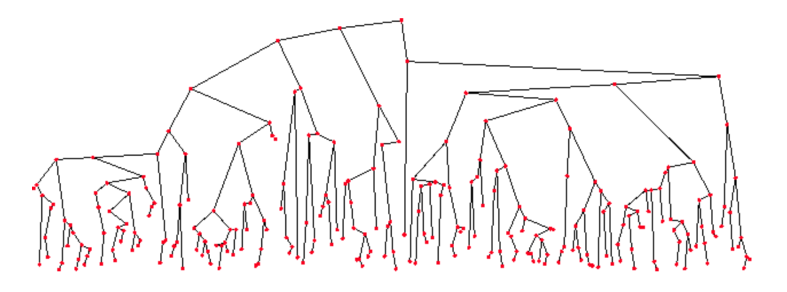

What We’re Exploring This Module
In this module we explore the binary search tree (BST) — a simple, fundamental linked data structure that enables efficient searching, insertion, and deletion with O(log n) average performance.

The BST Invariant
For any node in a BST, all values in its left subtree are less than the node’s value, and all values in its right subtree are greater. This property holds for every node at every level — not just the immediate children.
This invariant is what makes BSTs fast. Because the tree is organized by value, a search never needs to examine both subtrees — at each node it uses one comparison to choose a single subtree to continue. When the tree height stays logarithmic, that choice quickly narrows the search to a small fraction of the nodes. The result is O(log n) average time for search, insertion, and deletion.
How BSTs Compare
BSTs sit in an interesting position relative to the data structures we’ve already seen:
- Versus linked lists: Linked lists require O(n) for search, insertion, and deletion (assuming no prior reference to the target position). BSTs improve all three to O(log n) average by exploiting the ordering invariant.
- Versus vectors: Vectors offer O(1) random access but O(n) for insertion and deletion in the middle. BSTs give up random access entirely but can provide O(log n) average time for the three core operations on dynamic, always-sorted data.
BSTs and Recursion
Time to dust off your recursive thinking — BSTs are one of the most natural homes for recursive algorithms in all of data structures.
A BST is itself a recursive data structure: every node is the root of its own subtree, and that subtree is itself a valid BST. This means BST operations can be defined in terms of the same operation applied to a smaller subtree:
- Search: compare the target value to the current node; recursively search the left or right subtree depending on the result.
- Insertion: find the correct empty position by recursively following the BST invariant, then attach a new node.
- Deletion: locate the node, handle the three structural cases, and let recursion clean up the subtree.
If that still sounds abstract, have no fear. By the end of this week’s project you will have implemented all three operations yourself and the recursive structure will feel concrete and intuitive.
This week’s project: prj04
Implement insertion, deletion, and search for a BST — including the lazy deletion variant. Recursion required.